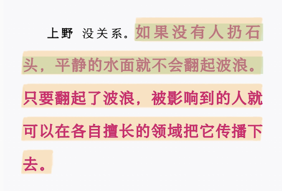
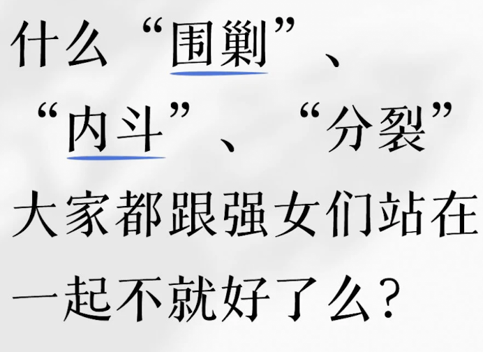

時璃風医詩🌈🏳️🌈
@hagishigure
强女强在哪。
涉猎学科少于15门的，深度掌握的技能少于35样的，纵深水平比我浅的，一律不看。
没有点东西还想要三声大笑击溃当权者用收放自如的潇洒给旧理论当头一棒吗。
我就是新的菲勒斯，新的太阳，新的尼采。


我当刚强壮胆
@wodanggangqiang
我感谢激女，因为现实就是如果没有她们冲在最前面，很多所谓“理性”“温和”的话，根本轮不到被听见。
平静的水面不会自己翻浪，没人掷石头，就只会继续装作一切正常。 https://t.co/J9vb7P1ZBe